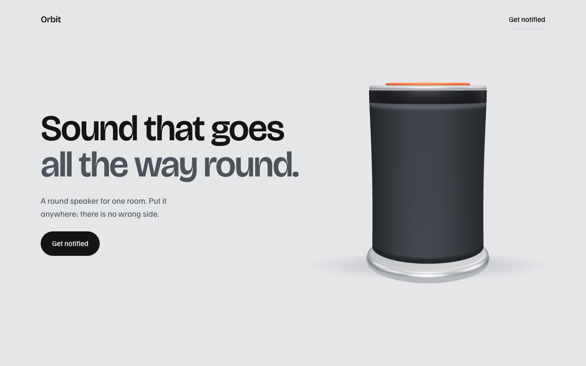
Product, exploded on scroll
Orbit
A speaker built from code shapes. It tilts toward your cursor, opens into five labelled layers as you scroll, and its dial turns on the page.
Open the live siteWebsites built by a Claude Code skill from a folder of content. Every 3D object below is built in code: no video, no paid assets. Scroll them, move your mouse, turn the dial.

A speaker built from code shapes. It tilts toward your cursor, opens into five labelled layers as you scroll, and its dial turns on the page.
Open the live site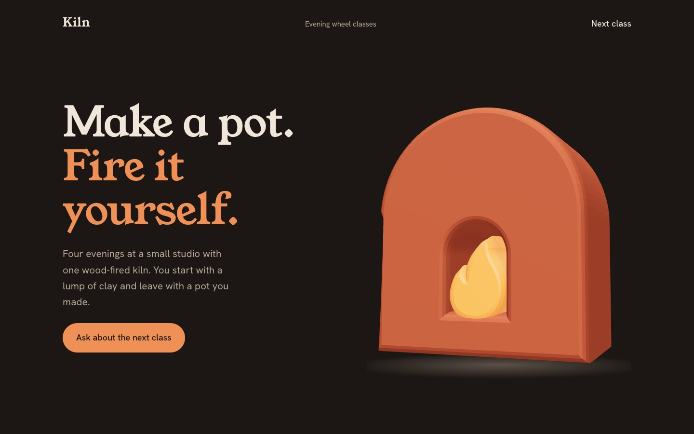
A flat SVG logo turned into a fired-clay object with a glowing flame. It follows the cursor and turns as you scroll. The explainer below throws a pot, glazes it and fires it.
Open the live site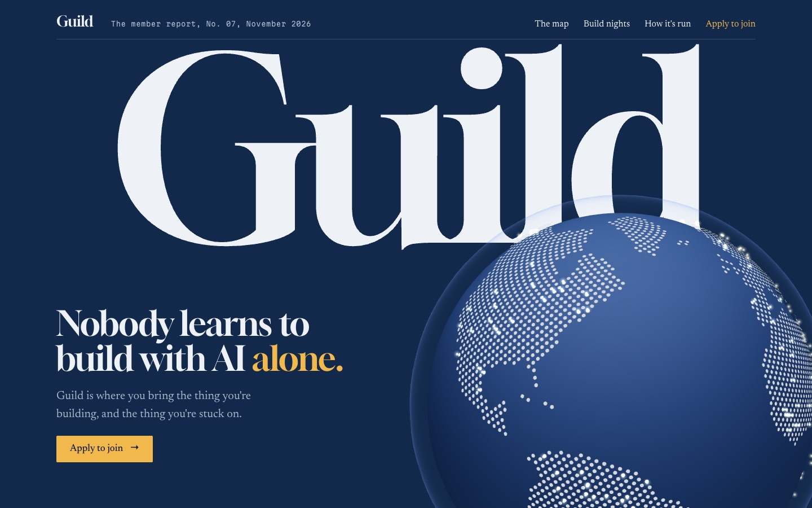
A community site styled as an annual report. A dot globe turns as you scroll and member dots glow in, and a meter counts each sourced claim as you pass it.
Open the live site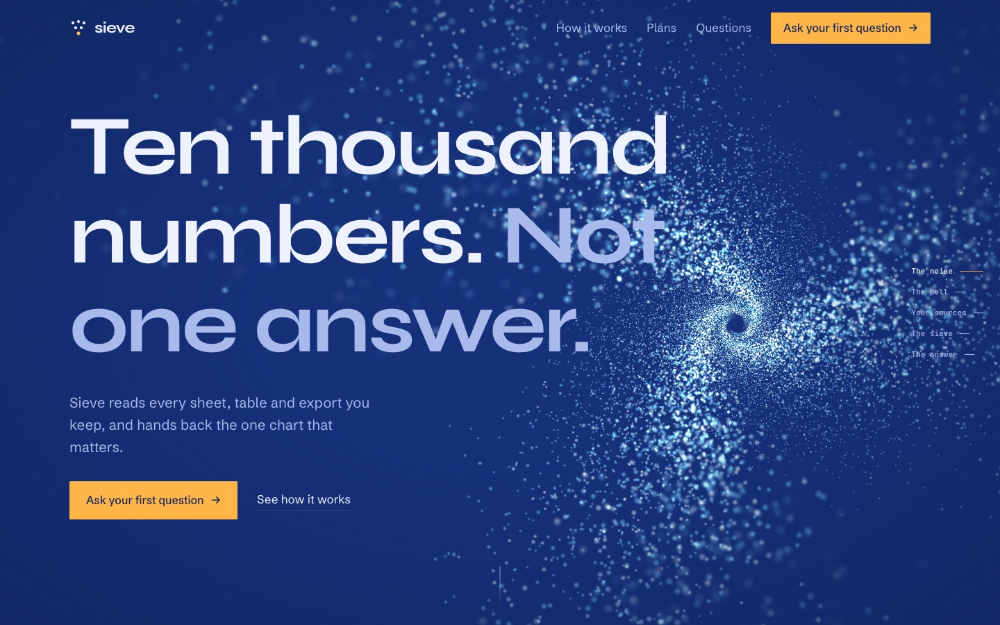
A data tool. You scroll through a vortex of tens of thousands of light particles until they settle into one simple bar chart.
Open the live site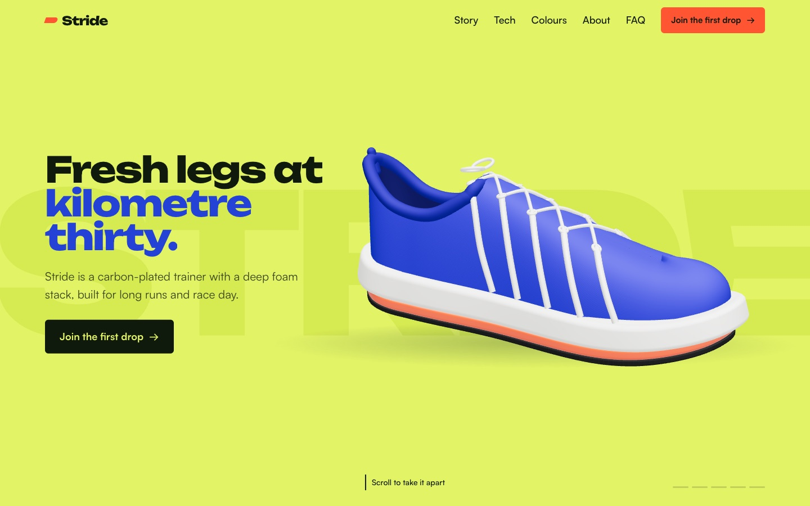
A running shoe built from code. Scroll and it comes apart into its six layers, shows its heel-to-toe drop, and changes colour when you pick one.
Open the live site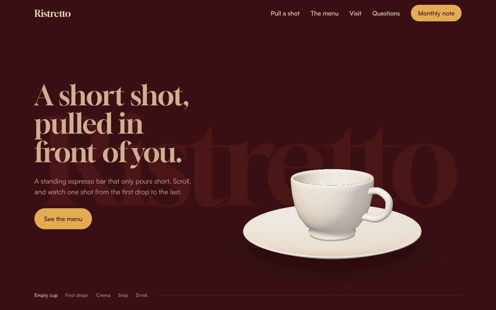
An espresso bar. Scroll and one shot pours into the cup, from the first drops to the crema, then you can pull one yourself.
Open the live site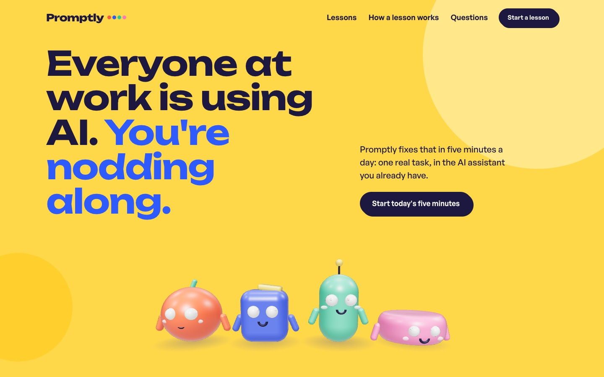
A learning app with four 3D coaches. Their eyes follow your cursor, they hop as your streak grows, and the one you pick steps forward.
Open the live site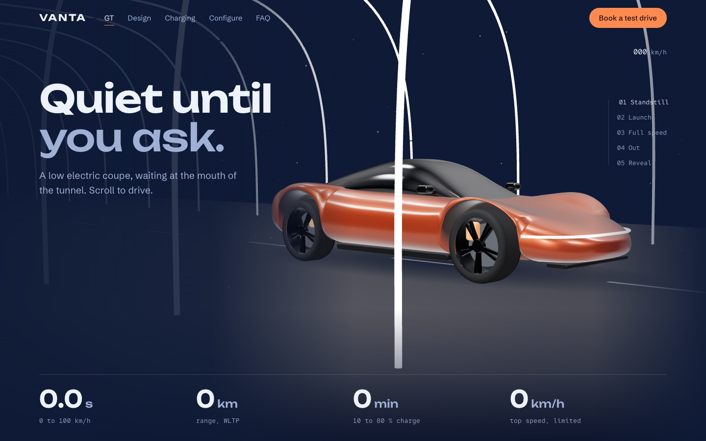
An electric coupe built from code. Scroll and it drives through a tunnel of light, faster and faster, then the camera circles it. Pick a paint and wheels and the car changes live.
Open the live site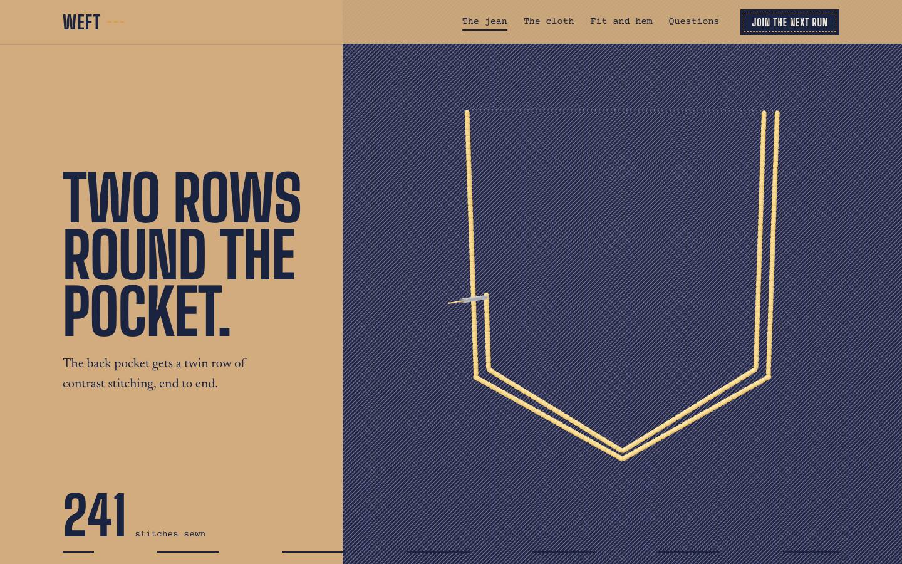
A selvedge denim brand. Scroll and a needle sews the pocket's ochre stitching, sets copper rivets and chain-stitches the hem, then the camera dives into the twill.
Open the live site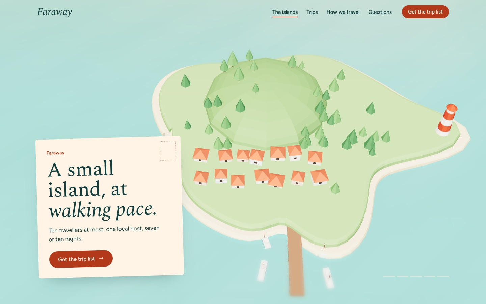
A small-group travel company. Scroll and you fly over a miniature island: the ferry comes in, you pass the village and the headland, and dusk falls until the lighthouse comes on.
Open the live site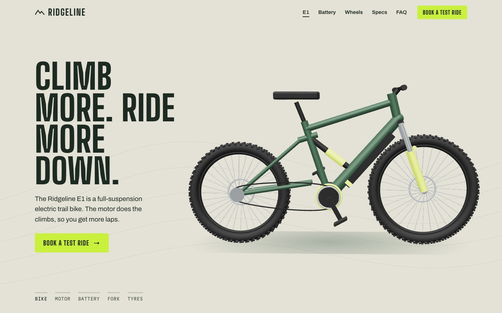
An electric mountain bike built from code. Scroll and the camera rides to the motor, the battery slides out, the fork compresses and the knobby tyres turn. Then drag it round, tap its parts and change its colour.
Open the live site